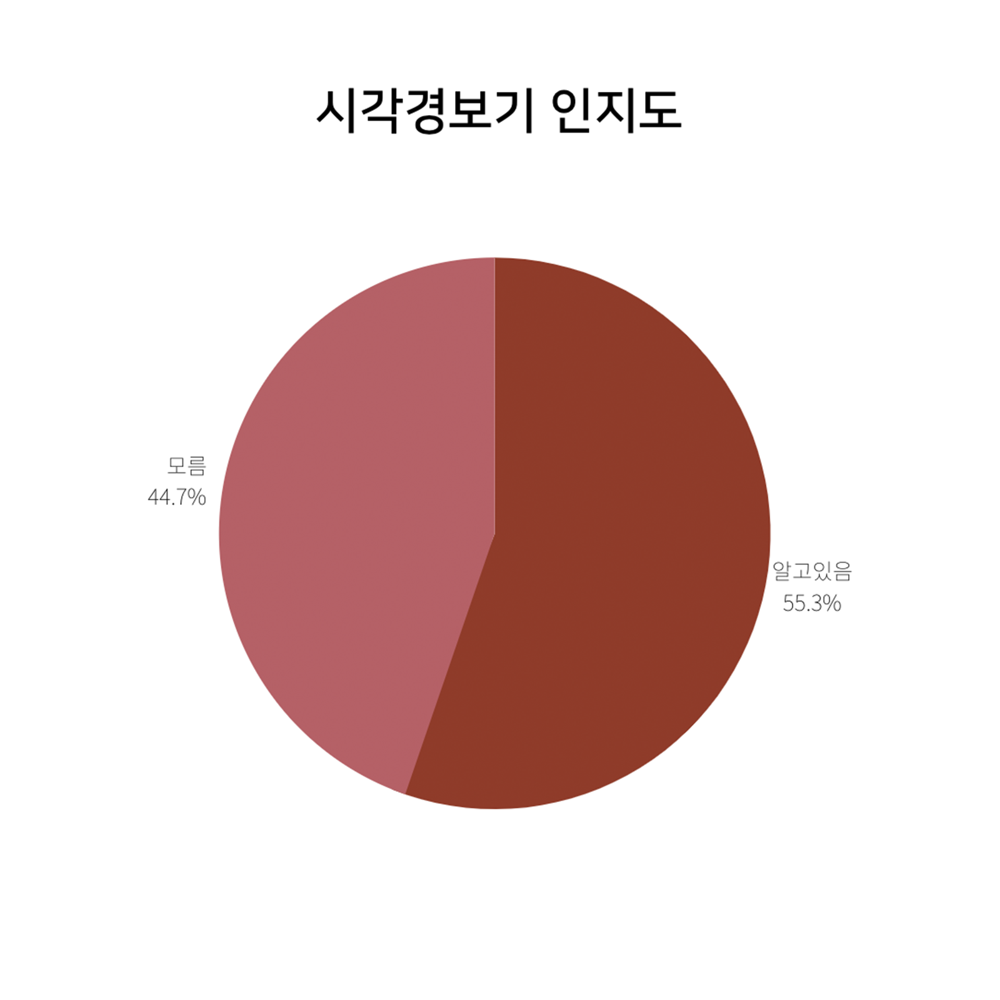
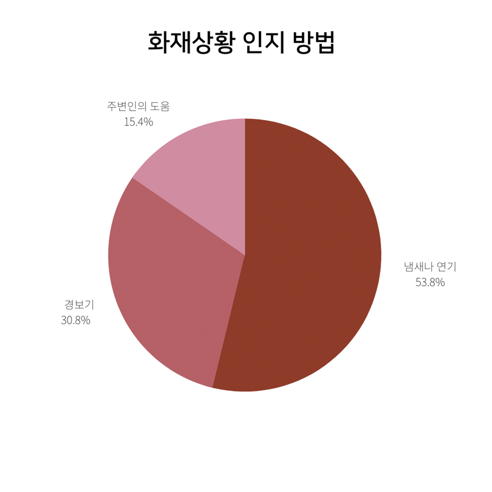

“화재시 청각장애인 혼자서는 대피를 하지 못할 것 같아요. 귀가
안들려서 아무 도움없이 있다가 죽었겠네요..”
- C씨의 인터뷰 중 -
“연기냄새를 맡고 대피할 때는 이미 위험한 상황에 처해있을 것 같고
특히 아이들이 걱정입니다.”
- B씨의 인터뷰 중 -
“경보음이 계속 울리고 있음에도 알지 못해서 자칫 위험할 뻔 했습니다.”
- A씨의 인터뷰 중 -
청각장애인
28%
비장애인
6%
청각장애인과 비장애인의 화재 사망률
대피 시도 후 실패
16%
화재상황 인지 실패
80%
기타
4%
청각장애인 화재대피 실패원인
청각장애인들은 불이 났다는 사실을 늦게 인지해 비장애인보다 화재대피가 어렵습니다.
청각장애인 화재대피를 돕기 위한 솔루션인 시각경보기가 있음에도,
왜 늦게 알아챌까요?


이처럼 저희는 가설을 세운 뒤 이를 검증하기 위해 설문조사와 인터뷰를 진행하였습니다.
설문조사에서 시각경보기 사진을 제시하고 어떤 용도의 물건인지 물었을 때 전체 38명중 약44%가 ‘모른다’라고 답변 하였고, 약 55%가 ’알고있다’고
답변하였습니다.

시각경보기의 설치 빈도수를 묻는 문항의 답변 평균을 따져보았을 때,
약 34% 설치되었으며 나머지 약 66%는 설치되지 않았다.
화재상황을 겪어봤다는 청각장애인들 중 약 54%의 사람들이 냄새나 연기로 인지했다고 응답했습니다.
그리고 나머지 15%는 주변인의 도움으로, 31%는 경보기로 인지했다는 결과가 나왔습니다.

설문조사를 통해 문제검증을 끝냈습니다.
청각장애인 화재대피에 대한 핵심 원인은'핵심원인이 들어갈 자리입니다'입니다.
PDF 팀은 이러한 과정을 통해 솔루션을 제작할 것이며,
청각장애인의 화재 사망률을 낮출 수 있기를 기대합니다.
우리는 누구인가요?

우유 | PDF의 리슨대장
Motive
처음부터 이 주제를 하려고 한 것은 아니다. 하지만 한 팀원이 던진 청각장애인 화재대피라는 키워드를 보고 뉴스나 커뮤니티에서도 많이 이슈화 되는 주제인것 같아 프로젝트에 관심이 생기게 되었었다. 화재 대피 과정 이 아닌 화재 인지과정의 문제임을 찾고 더 세세한 원인 검증을 하다보니 더욱 의미있다는 생각이 들었다.
Position
팀원들이 의견을 내거나 피드백을 받으면 그것을 모두 정리해서 기록하고 , 아이디어도 낸다.
처음부터 이 주제를 하려고 한 것은 아니다. 하지만 한 팀원이 던진 청각장애인 화재대피라는 키워드를 보고 뉴스나 커뮤니티에서도 많이 이슈화 되는 주제인것 같아 프로젝트에 관심이 생기게 되었었다. 화재 대피 과정 이 아닌 화재 인지과정의 문제임을 찾고 더 세세한 원인 검증을 하다보니 더욱 의미있다는 생각이 들었다.
Position
팀원들이 의견을 내거나 피드백을 받으면 그것을 모두 정리해서 기록하고 , 아이디어도 낸다.
주디 | PDF의 행동대장
Motive
비장애인으로 살아가며 화재인지가 어렵다고 생각한 적이 없었다. 그러나 소리가 들리지 않는다고 생각하니 화재 상황을 어떻게 인식하고 대피할 수 있을지 막막한 느낌이 들었고, 청각장애인의 화재 사망률이 비장애인에 비해 2.4배가량 높다는 통계자료를 보고 문제 상황으로 인지하여 이를 해결하고자 프로젝트에 참여하게 되었다.
Position
새로운 아이디어를 제시하거나 팀원들의 의견을 종합해서 요약하기도 한다. 현재 프로젝트 단계에서는 인터뷰를 위한 단체를 알아보고 메일을 보내거나 회사, 협회 측에 전화를 하는 일을 주로 담당하고 있다.
비장애인으로 살아가며 화재인지가 어렵다고 생각한 적이 없었다. 그러나 소리가 들리지 않는다고 생각하니 화재 상황을 어떻게 인식하고 대피할 수 있을지 막막한 느낌이 들었고, 청각장애인의 화재 사망률이 비장애인에 비해 2.4배가량 높다는 통계자료를 보고 문제 상황으로 인지하여 이를 해결하고자 프로젝트에 참여하게 되었다.
Position
새로운 아이디어를 제시하거나 팀원들의 의견을 종합해서 요약하기도 한다. 현재 프로젝트 단계에서는 인터뷰를 위한 단체를 알아보고 메일을 보내거나 회사, 협회 측에 전화를 하는 일을 주로 담당하고 있다.
양파 | PDF의 막내
Motive
재난 상황은 모두가 겪을수 있고 그러한 상황에서 장애인들도 잊을수 없는 타겟이 된다고 생각하였다. 청각장애인 화재 대피라는 부분에서의 제한점은 심각할 정도로 많은 요소들이 포함되어 있었고, 그것을 증명할수 있는 청각장애인의 화재상황 사망률이 높다는 통계가 있었다. 그렇게 문제 상황을 인지하고 최적의 솔루션을 내기 위하여 노력을 할 필요가 있다고 생각하여 이 프로젝트에 참여 하였다.
Position
팀 내에서 자료조사 역할을 맡고 있고, 팀 분위기를 유지하는데에 역할을 한다.
재난 상황은 모두가 겪을수 있고 그러한 상황에서 장애인들도 잊을수 없는 타겟이 된다고 생각하였다. 청각장애인 화재 대피라는 부분에서의 제한점은 심각할 정도로 많은 요소들이 포함되어 있었고, 그것을 증명할수 있는 청각장애인의 화재상황 사망률이 높다는 통계가 있었다. 그렇게 문제 상황을 인지하고 최적의 솔루션을 내기 위하여 노력을 할 필요가 있다고 생각하여 이 프로젝트에 참여 하였다.
Position
팀 내에서 자료조사 역할을 맡고 있고, 팀 분위기를 유지하는데에 역할을 한다.
테르 | PDF의 수장님
Motive
어쩌다 보니 장애인과 관련된 문제를 해결하고 있었고, 어쩌다 보니 팀의 리더를 맡고 있다. 그리고 어느 순간 청각장애인 화재대피 문제의 해결이 필요하다고 느끼고 있다.
Position
팀의 전체정인 진행을 맡고 있으며, 팀의 리더를 맡고 있다. 그 외에도 디자인,프로그래밍 등 팀에서 부족한 부분을 채우는 역할을 하고있다.
어쩌다 보니 장애인과 관련된 문제를 해결하고 있었고, 어쩌다 보니 팀의 리더를 맡고 있다. 그리고 어느 순간 청각장애인 화재대피 문제의 해결이 필요하다고 느끼고 있다.
Position
팀의 전체정인 진행을 맡고 있으며, 팀의 리더를 맡고 있다. 그 외에도 디자인,프로그래밍 등 팀에서 부족한 부분을 채우는 역할을 하고있다.